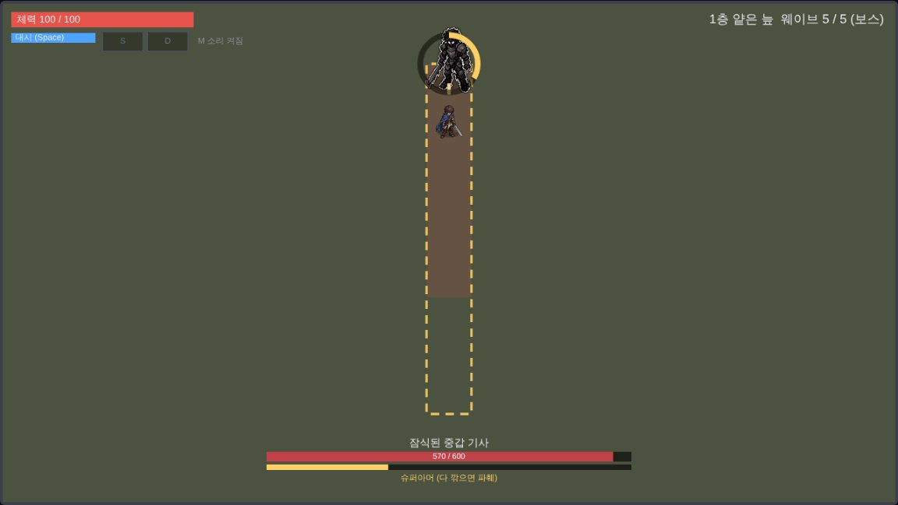

액션 로그라이트 기획 포트폴리오
늪의 근원을 찾아 던전으로 들어간 탐사대원이, 아래로 내려갈수록 늪에 동화되는 액션 로그라이트입니다.
기획서, 브라우저 프로토타입, 봇 시뮬레이션 밸런스 대시보드AI를 활용한 개인 프로젝트 / 이정헌

보는 순서: 기획서 → 프로토타입 → 밸런스 대시보드
콘셉트와 테마, 통합 기획서, 시스템, 레벨, 보스, DT, 대시보드 기획서
브라우저에서 바로 플레이하고, 봇의 플레이를 다시 볼 수 있습니다.방향키 이동, A 공격, Space 대시, S, D 스킬
수치를 바꿔 실력별 봇으로 시뮬레이션하고, 결과를 기획 의도와 비교합니다.
AI 역할 구분, 로그 기록 항목, QA 기록, 프로토타입 개발 기록